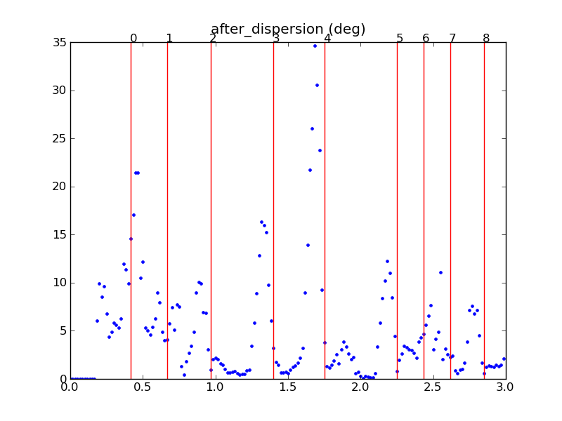
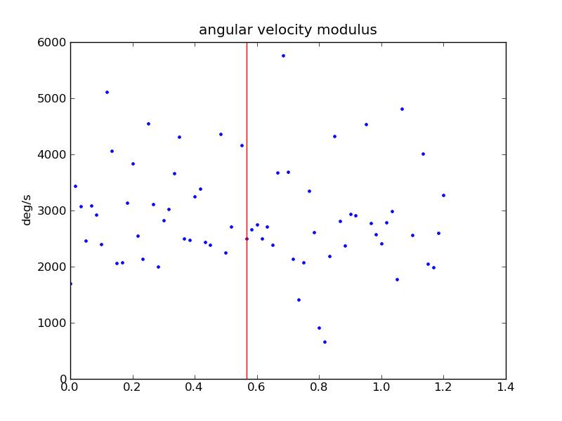

| Index |
Interval (s) |
Amplitude (deg) |
Duration (s) |
Angular velocity (deg/s) |
Sign |
Linear velocity (m/s) |
Linear acceleration (m/s^2) |
Orientation (before -> after) |
Samples used (before, after) |
| 0 |
0.23 |
47.4 |
0.03 |
1873.991 |
1 |
0.35 |
11.93 |
100, 52 |
7,6 |
| 1 |
0.25 |
43.3 |
0.04 |
999.979 |
1 |
0.25 |
1.87 |
75, 32 |
7,6 |
| 2 |
0.30 |
55.9 |
0.06 |
938.861 |
1 |
0.26 |
3.71 |
52, -3 |
6,6 |
| 3 |
0.43 |
81.0 |
0.07 |
1124.262 |
1 |
0.31 |
5.23 |
3, -77 |
6,6 |
| 4 |
0.35 |
134.3 |
0.07 |
1995.587 |
-1 |
0.19 |
6.99 |
276, 50 |
6,6 |
| 5 |
0.50 |
53.1 |
0.06 |
844.801 |
-1 |
0.37 |
3.30 |
37, 90 |
6,6 |
| 6 |
0.18 |
25.4 |
0.07 |
378.731 |
1 |
0.38 |
2.02 |
87, 62 |
6,7 |
| 7 |
0.18 |
29.9 |
0.04 |
709.460 |
-1 |
0.27 |
1.38 |
52, 82 |
6,6 |
| 8 |
0.23 |
38.2 |
0.06 |
664.432 |
-1 |
0.37 |
4.33 |
92, 130 |
6,6 |


| Index |
Interval (s) |
Amplitude (deg) |
Duration (s) |
Angular velocity (deg/s) |
Sign |
Linear velocity (m/s) |
Linear acceleration (m/s^2) |
Orientation (before -> after) |
Samples used (before, after) |
| 9 |
0.30 |
59.8 |
0.08 |
776.421 |
1 |
0.39 |
6.50 |
112, 52 |
6,6 |
| 10 |
0.53 |
113.8 |
0.06 |
1846.723 |
1 |
0.26 |
9.26 |
55, -58 |
6,7 |
| 11 |
0.33 |
66.6 |
0.06 |
1032.758 |
1 |
0.37 |
6.52 |
305, -121 |
6,6 |
| 12 |
0.88 |
105.9 |
0.07 |
1566.768 |
1 |
0.17 |
5.45 |
265, 159 |
6,6 |
| 13 |
0.72 |
66.1 |
0.06 |
1137.779 |
1 |
0.51 |
8.22 |
152, 86 |
6,6 |
| Index |
Interval (s) |
Amplitude (deg) |
Duration (s) |
Angular velocity (deg/s) |
Sign |
Linear velocity (m/s) |
Linear acceleration (m/s^2) |
Orientation (before -> after) |
Samples used (before, after) |
| 14 |
0.58 |
98.5 |
0.05 |
1798.442 |
1 |
0.30 |
15.45 |
98, 0 |
6,6 |
| 15 |
0.22 |
28.0 |
0.02 |
1122.382 |
-1 |
0.39 |
5.20 |
2, 30 |
7,6 |
| 16 |
0.23 |
85.3 |
0.06 |
1336.956 |
1 |
0.37 |
6.42 |
9, -75 |
6,6 |
| 17 |
0.73 |
88.2 |
0.06 |
1425.158 |
-1 |
0.24 |
2.67 |
265, -6 |
6,6 |
| 18 |
0.83 |
178.6 |
0.07 |
2545.022 |
-1 |
0.14 |
2.39 |
24, -156 |
6,6 |
| 19 |
0.55 |
97.3 |
0.04 |
2294.607 |
1 |
0.16 |
4.06 |
62, -34 |
6,6 |
| Index |
Interval (s) |
Amplitude (deg) |
Duration (s) |
Angular velocity (deg/s) |
Sign |
Linear velocity (m/s) |
Linear acceleration (m/s^2) |
Orientation (before -> after) |
Samples used (before, after) |
| 20 |
0.23 |
59.0 |
0.03 |
2304.235 |
1 |
0.13 |
3.50 |
0, -58 |
6,3 |
| Index |
Interval (s) |
Amplitude (deg) |
Duration (s) |
Angular velocity (deg/s) |
Sign |
Linear velocity (m/s) |
Linear acceleration (m/s^2) |
Orientation (before -> after) |
Samples used (before, after) |
| 21 |
41.13 |
57.2 |
0.06 |
907.963 |
1 |
0.30 |
5.26 |
352, -64 |
6,6 |
| 22 |
0.25 |
47.2 |
0.02 |
2454.602 |
1 |
0.71 |
2.03 |
310, -96 |
6,6 |
| 23 |
0.33 |
42.3 |
0.05 |
925.919 |
1 |
0.18 |
2.46 |
282, -119 |
6,6 |
| 24 |
1.22 |
35.5 |
0.05 |
688.628 |
-1 |
0.36 |
3.12 |
255, -69 |
6,7 |
| 25 |
0.85 |
69.1 |
0.06 |
1107.681 |
-1 |
0.39 |
6.36 |
292, 1 |
7,6 |
| Index |
Interval (s) |
Amplitude (deg) |
Duration (s) |
Angular velocity (deg/s) |
Sign |
Linear velocity (m/s) |
Linear acceleration (m/s^2) |
Orientation (before -> after) |
Samples used (before, after) |
| 26 |
0.18 |
34.6 |
0.03 |
1253.013 |
1 |
0.11 |
2.72 |
6, -28 |
6,6 |
| 27 |
0.17 |
91.1 |
0.08 |
1115.945 |
-1 |
0.20 |
1.36 |
342, 73 |
6,6 |
| 28 |
0.18 |
28.8 |
0.06 |
445.863 |
1 |
0.21 |
1.03 |
75, 46 |
6,7 |
| 29 |
0.33 |
52.4 |
0.05 |
1129.217 |
1 |
0.45 |
4.61 |
50, -2 |
6,6 |
| 30 |
0.52 |
31.3 |
0.04 |
752.523 |
-1 |
0.10 |
0.87 |
124, 155 |
7,6 |
| 31 |
1.27 |
176.5 |
0.06 |
2887.834 |
-1 |
0.20 |
6.70 |
76, -106 |
6,7 |
| Index |
Interval (s) |
Amplitude (deg) |
Duration (s) |
Angular velocity (deg/s) |
Sign |
Linear velocity (m/s) |
Linear acceleration (m/s^2) |
Orientation (before -> after) |
Samples used (before, after) |
| 32 |
0.98 |
176.0 |
0.04 |
4158.180 |
-1 |
0.15 |
2.99 |
188, 4 |
7,6 |

